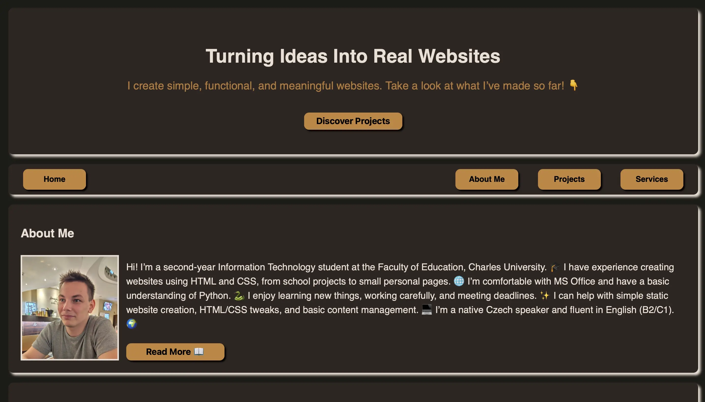
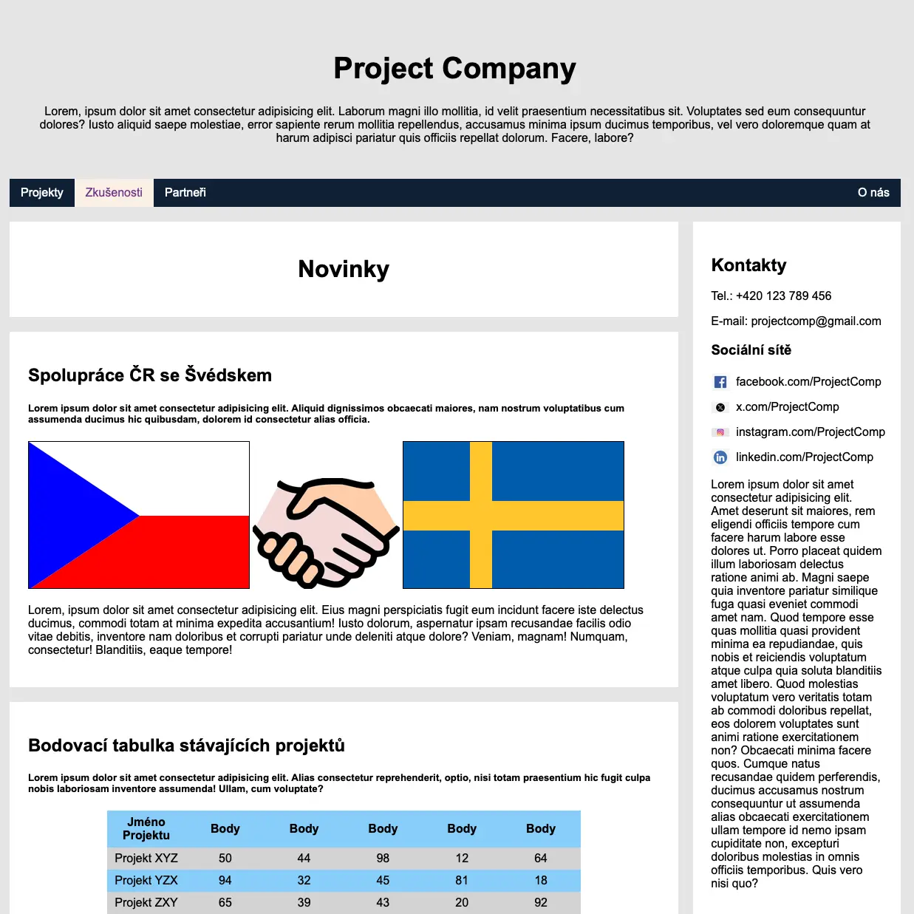

Horrorová Databáze
První webová aplikace propojená s reálným backendem.

Aetheronova Brána
První ARG projekt jako semestrální projekt ve druhém ročníku VŠ.

Osobní Portfolio
Osobní portfolio jako začátek mé cesty webového vývojáře.

Custom Project Company
Můj první web vytvořený jako semestrální projekt v prvním ročníku.